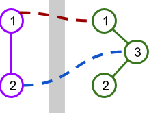
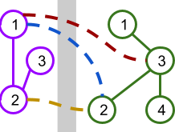

A modern railroad system built in Ekiya's town bumped into a major hurdle: the main freeway running north to south. $$$\mathbf{W}$$$ stations have already been built and connected on the western side of the freeway and $$$\mathbf{E}$$$ on the eastern side. One more connection is needed between a western and an eastern station, but because the freeway is in the way, that connection needs to be built using an overpass.
Ekiya is assessing which stations would be most convenient to connect with the overpass. As part of that assessment, she wants to know how the average length (in number of stations) of a path within the system might change with each possible option.
A path between stations $$$s$$$ and $$$t$$$ is a list of distinct stations that starts with $$$s$$$, ends with $$$t$$$, and such that any two consecutive stations on the list share a connection. The railroad system currently has $$$\mathbf{W}$$$ stations on the western side, connected through $$$\mathbf{W}-1$$$ connections such that there is exactly one path between any two distinct western stations. Similarly, there are $$$\mathbf{E}$$$ eastern stations connected through $$$\mathbf{E}-1$$$ connections such that there is exactly one path between any two distinct eastern stations. After the overpass connection is built connecting one western and one eastern station, there will be exactly one path between any two distinct stations.
A complete map is a map that has $$$\mathbf{W}+\mathbf{E}-1$$$ total connections and exactly one path between any pair of stations. The average distance of a complete map is the average of the length of paths between all pairs of different stations. The length of a path is one less than the length of the list of stations that defines it (e.g., the path between directly connected stations has a length of $$$1$$$).
As an example, the picture below illustrates a scenario with $$$\mathbf{W} = 2$$$ stations on the west side and $$$\mathbf{E} = 3$$$ stations on the east side. There are $$$2$$$ possible overpasses shown.

This table shows the lengths of the paths between pairs of stations if each overpass were to be built.
| $$$\color{darkred}{\mathbf{1 \leftrightarrow 1}}$$$ | $$$\color{darkblue}{\mathbf{2 \leftrightarrow 3}}$$$ | ||
|---|---|---|---|
| West $$$1$$$ | West $$$2$$$ | $$$1$$$ | $$$1$$$ |
| West $$$1$$$ | East $$$1$$$ | $$$1$$$ | $$$3$$$ |
| West $$$1$$$ | East $$$2$$$ | $$$3$$$ | $$$3$$$ |
| West $$$1$$$ | East $$$3$$$ | $$$2$$$ | $$$2$$$ |
| West $$$2$$$ | East $$$1$$$ | $$$2$$$ | $$$2$$$ |
| West $$$2$$$ | East $$$2$$$ | $$$4$$$ | $$$2$$$ |
| West $$$2$$$ | East $$$3$$$ | $$$3$$$ | $$$1$$$ |
| East $$$1$$$ | East $$$2$$$ | $$$2$$$ | $$$2$$$ |
| East $$$1$$$ | East $$$3$$$ | $$$1$$$ | $$$1$$$ |
| East $$$2$$$ | East $$$3$$$ | $$$1$$$ | $$$1$$$ |
| Average: | $$$2$$$ | $$$1.8$$$ |
Given the current stations and connections, and a list of options for the overpass connection, help Ekiya by calculating the average distance of the map that would result if that option was the only overpass connection built.
The first line of the input gives the number of test cases, $$$\mathbf{T}$$$. $$$\mathbf{T}$$$ test cases follow. Each test case starts with a line with three integers $$$\mathbf{W}$$$, $$$\mathbf{E}$$$, and $$$\mathbf{C}$$$, the number of western and eastern stations, and the number of options for the overpass connection, respectively. Western stations are numbered between $$$1$$$ and $$$\mathbf{W}$$$ and eastern connections are numbered between $$$1$$$ and $$$\mathbf{E}$$$.
The second line of a test case contains $$$\mathbf{W}-1$$$ integers $$$\mathbf{X_1}, \mathbf{X_2}, \dots, \mathbf{X_{W-1}}$$$ representing that the $$$i$$$-th existing connection among western stations connects western stations $$$i$$$ and $$$\mathbf{X_i}$$$.
The third line of a test case contains $$$\mathbf{E}-1$$$ integers $$$\mathbf{F_1}, \mathbf{F_2}, \dots, \mathbf{F_{E-1}}$$$ representing that the $$$j$$$-th existing connection among eastern stations connects eastern stations $$$j$$$ and $$$\mathbf{F_j}$$$.
Finally, the last $$$\mathbf{C}$$$ lines of a test case describe the options for the overpass connection. The $$$k$$$-th of these lines contains two integers $$$\mathbf{A_k}$$$ and $$$\mathbf{B_k}$$$ representing the western and eastern stations, respectively, that the $$$k$$$-th option for an overpass connection would connect.
For each test case, output one line containing
Case #$$$x$$$: $$$y_1 ~ y_2 ~ \cdots ~ y_{\mathbf{C}}$$$,
where $$$x$$$ is the test case number (starting from 1) and $$$y_k$$$ is the average distance of
the map resulting in adding the $$$k$$$-th option as an overpass connection to all existing
connections.
$$$y_1$$$, $$$y_2$$$, $$$\dots$$$ and $$$y_k$$$ will be considered correct if they are within an
absolute or relative error of $$$10^{-6}$$$ of the correct answer. See the
FAQ
for an explanation of what that means, and what formats of real numbers
we accept.
Memory limit: 2 GB.
$$$1 \le \mathbf{T} \le 100$$$.
$$$2 \le \mathbf{W} \le 10^5$$$.
$$$2 \le \mathbf{E} \le 10^5$$$.
$$$i + 1 \le \mathbf{X_i} \le \mathbf{W}$$$, for all $$$i$$$.
(This implies that there is exactly one path between each pair of western stations.)
$$$j + 1 \le \mathbf{F_j} \le \mathbf{E}$$$, for all $$$j$$$.
(This implies that there is exactly one path between each pair of eastern stations.)
$$$1 \le \mathbf{A_k} \le \mathbf{W}$$$, for all $$$k$$$.
$$$1 \le \mathbf{B_k} \le \mathbf{E}$$$, for all $$$k$$$.
$$$(\mathbf{A_k}, \mathbf{B_k}) \neq (\mathbf{A_\ell}, \mathbf{B_\ell})$$$, for all $$$k \neq \ell$$$. (Each listed overpass
connection is different.)
Time limit: 20 seconds.
$$$1 \le \mathbf{C} \le 2$$$.
Time limit: 40 seconds.
$$$1 \le \mathbf{C} \le 10^5$$$.
3 2 3 2 2 3 3 1 1 2 3 3 4 2 2 3 3 3 4 1 3 1 2 3 4 1 2 3 3 3 4 2 2
Case #1: 2.0 1.8 Case #2: 2.19047619 2.47619048 Case #3: 2.2857142857
Sample Case #1 is explained and illustrated in the problem statement. Sample Case #2 and Sample Case #3 are illustrated below.
